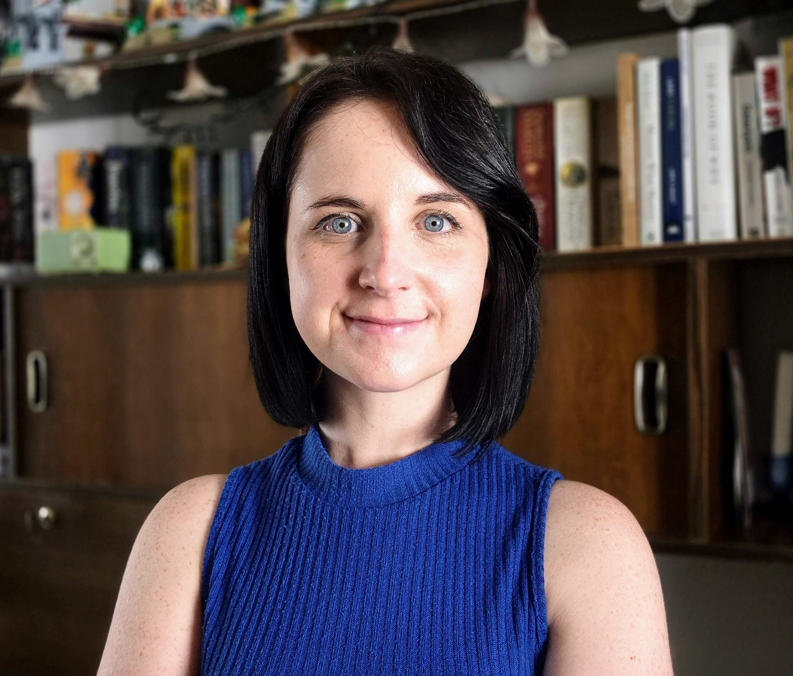

JRI am a Computer Science PhD candidate at the University of the Witwatersrand (Wits), Johannesburg, and a Google PhD Fellow in Health Research. I am supervised by Professor Bruce Bassett and am a member of the Robotics, Autonomous Intelligence, and Learning (RAIL) Lab. I work in an interdisciplinary team of computer scientists and medical doctors.
My research is on probabilistic inference and AI systems for clinical decision-making, specifically sequential diagnosis and patient management in the South African public healthcare system.
Before starting my PhD in January 2026, I spent nine years at Discovery Health, most recently as Principal Data Scientist. I led a team of data scientists and AI engineers that prototyped and deployed AI and machine learning systems, including natural language processing and large language model applications for healthcare and operations.
Research
Doctors in South African public hospitals often make diagnostic and treatment decisions under time pressure, with incomplete information and few specialists available. Frontier AI models now perform well at diagnosis in many settings, but there is little evidence on how effective and safe they are in low- and middle-income countries.
My PhD develops Bayesian methods for using AI models in clinical decisions, so that the quantities a decision depends on are explicit and can be inspected by clinicians. It is driven by wanting to address three questions in sequential decision-making:
- What is the diagnosis? Estimating the diagnosis, often when doctors and AI systems disagree and no verified diagnosis is available.
- What test should we do next? Ranking possible investigations by their expected value of information and immediate and downstream benefit to the patient, taking into account the cost and availability of tests.
- What patient management step should be taken? Recommending management steps using multi-objective optimisation and decision theory, with offline reinforcement learning as an exploratory extension.
The applications are general diagnosis in internal medicine and paediatrics, and antimicrobial resistance. See Projects for current work.
Awards
- 2026–2028Google PhD Fellowship in Health Research
- 2026Second place, Best Research PresentationWits Science Faculty research showcase
- 2024Mail & Guardian 200 Young South Africans
- 2023Winner, Discovery Actuarial ConferenceInternational competition of 800 actuaries and data scientists, for the company's first training and application of large language models
- 2023Award for excellence in operations research practiceOperations Research Society of South Africa
Invited talks
- 2026Asking the right questions: AI in science and healthcareWits Science Faculty Top Achievers Day
- 2026AI in healthcareWits Physicians' Update
- 2024RAG: learnings from industryDeep Learning IndabaX South Africa
- 2024Panellist: Ethics, law and governance with automated decision-making systemsNorton Rose and ORSSA
Experience
- 2024–2025Principal Data Scientist, Deputy General ManagerDiscovery Health. Led the design and evaluation of LLM-based systems and a team of 17 across data science, engineering and development.
- 2021–2023Senior Data Scientist and Divisional ManagerDiscovery Health. Established and led the NLP Centre of Excellence for the Discovery Group.
- 2017–2021Data Scientist and ManagerDiscovery Health. Predictive modelling, network analysis and unsupervised learning.
Service
- 2025Industry adviserAdvisory Council on AI in Healthcare
- 2022–2024Executive committee memberOperations Research Society of South Africa
Education
- 2026–PhD in Computer ScienceUniversity of the Witwatersrand. Thesis: Towards Robust Bayesian Sequential Diagnosis and Patient Management.
- 2018Master of Information TechnologyUniversity of Pretoria. Dissertation: Using Complex Network Theory to Analyse Workflow Processes.
- 2016BBusSci in Analytics, with distinctionUniversity of Cape Town